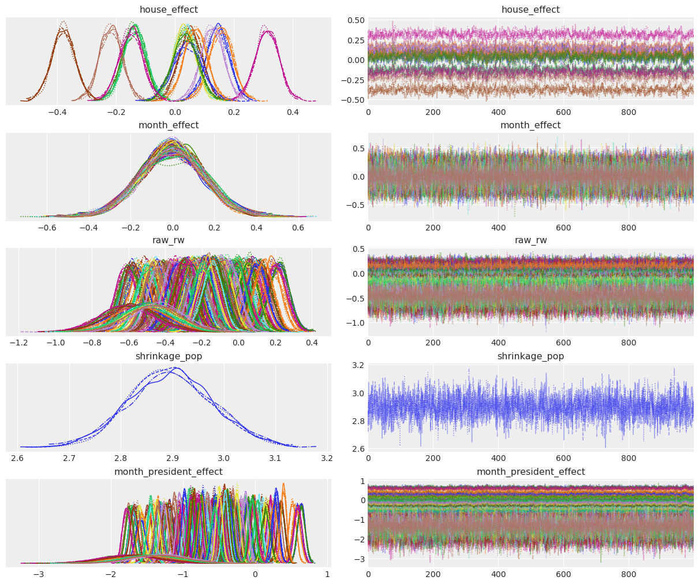

Estimating a Candidate's Popularity over Time with Gaussian Processes
Estimate French presidents' popularity across time with a Markov model
A few months ago, I experimented with a Gaussian Process to estimate the popularity of French presidents across time. The experiment was really positive, and helped me get familiar with the beauty of GPs. This time, I teamed up with Rémi Louf on a Markov Chain model to estimate the same process -- what is the true latent popularity, given that we only observe through the noisy data that are polls?
This was supposed to be a trial run before working on an electoral model for the coming regional elections in France -- it's always easier to start with 2 dimensions than 6, right? But the model turned out to be so good at smoothing and predicting popularity data that we thought it'd be a shame not to share it. And voilà!
Show me the data!
The data are the same as in my GP post, so we're not going to spend a lot of time explaining them. It's basically all the popularity opinion polls of French presidents since the term limits switched to 5 years (in 2002).
Let's import those data, as well as the (fabulous) packages we'll need:
import datetime import arviz import matplotlib.pyplot as plt import numpy as np import pandas as pd import pymc3 as pm import theano.tensor as aet from scipy.special import expit as logistic data = pd.read_csv( "https://raw.githubusercontent.com/AlexAndorra/pollsposition_models/master/data/raw_popularity_presidents.csv", header=0, index_col=0, parse_dates=True, )
The number of polls is homogeneous among months, except in the summer because, well, France:
data["month"].value_counts().sort_index()
1 100
2 96
3 100
4 89
5 91
6 95
7 68
8 71
9 94
10 99
11 98
12 82
Name: month, dtype: int64
Let us look at simple stats on the pollsters:
pd.crosstab(data.sondage, data.method, margins=True)
| Method | Face to face | Internet | Phone | Phone&internet | All |
|---|---|---|---|---|---|
| BVA | 0 | 101 | 89 | 0 | 190 |
| Elabe | 0 | 52 | 0 | 0 | 52 |
| Harris | 0 | 33 | 0 | 0 | 33 |
| Ifop | 0 | 29 | 181 | 38 | 248 |
| Ipsos | 0 | 40 | 177 | 0 | 217 |
| Kantar | 208 | 4 | 0 | 0 | 212 |
| Odoxa | 0 | 67 | 0 | 0 | 67 |
| OpinionWay | 0 | 12 | 0 | 0 | 12 |
| Viavoice | 0 | 20 | 0 | 0 | 20 |
| YouGov | 0 | 32 | 0 | 0 | 32 |
| All | 208 | 390 | 447 | 38 | 1083 |
Interesting: most pollsters only use one method -- internet.
Only BVA, Ifop, Ipsos (and Kantar very recently) use different methods.
So, if we naively estimate the biases of pollsters and methods individually,
we'll get high correlations in our posterior estimates --
the parameter for face to face
will basically be the one for Kantar, and vice versa.
So we will need to model the pairs (pollster, method)
rather than pollsters and methods individually.
Now, let's just plot the raw data and see what they look like:
approval_rates = data["p_approve"].values disapproval_rates = data["p_disapprove"].values doesnotrespond = 1 - approval_rates - disapproval_rates newterm_dates = data.reset_index().groupby("president").first()["index"].values dates = data.index fig, axes = plt.subplots(2, figsize=(12, 6)) for ax, rate, label in zip( axes.ravel(), [approval_rates, doesnotrespond], ["Approve", "No answer"], ): ax.plot(dates, rate, "o", alpha=0.4) ax.set_ylim(0, 1) ax.set_ylabel(label) for date in newterm_dates: ax.axvline(date, color="k", alpha=0.6, linestyle="--")
We notice two things when looking at these plots:
- Approval rates systematically decrease as the goes on.
- While that's true, some events seem to push the approval rate back up, even though temporarily. This happened in every term, actually. Can that variance really be explained solely with a random walk?
- Non-response rate is higher during Macron's term.
Monthly standard deviation
Something that often proves challenging with count data is that they are often more dispersed than traditional models expect them to be. Let's check this now, by computing the monthly standard deviation of the approval rates (we weigh each poll equally, even though we probably should weigh them according to their respective sample size):
rolling_std = ( data.reset_index() .groupby(["year", "month"]) .std() .reset_index()[["year", "month", "p_approve"]] ) rolling_std
| year | month | p_approve | |
|---|---|---|---|
| 0 | 2002 | 5 | 0.017078 |
| 1 | 2002 | 6 | 0.030000 |
| 2 | 2002 | 7 | 0.005774 |
| 3 | 2002 | 8 | 0.045826 |
| 4 | 2002 | 9 | 0.025166 |
| ... | ... | ... | ... |
| 223 | 2020 | 12 | 0.064627 |
| 224 | 2021 | 1 | 0.042661 |
| 225 | 2021 | 2 | 0.041748 |
| 226 | 2021 | 3 | 0.042980 |
| 227 | 2021 | 4 | 0.020000 |
228 rows × 3 columns
fig, ax = plt.subplots(figsize=(10, 4)) ax.plot( pd.to_datetime( [f"{y}-{m}-01" for y, m in zip(rolling_std.year, rolling_std.month)] ), rolling_std.p_approve.values, "o", alpha=0.5, ) ax.set_title("Monthly standard deviation in polls") for date in newterm_dates: ax.axvline(date, color="k", alpha=0.6, linestyle="--")
There is a very high variance for Chirac's second term, and for the beggining of Macron's term. For Chirac's term, it seems like the difference stems from the polling method: face-to-face approval rates seem to be much lower, as you can see in the figure below. For Macron, this high variance is quite hard to explain. In any case, we'll probably have to take this overdispersion (as it's called in statistical linguo) of the data in our models...
face = data[data["method"] == "face to face"] dates_face = face.index other = data[data["method"] != "face to face"] dates_other = other.index fig, ax = plt.subplots(figsize=(10, 4)) ax.plot(dates_face, face["p_approve"].values, "o", alpha=0.3, label="face to face") ax.plot(dates_other, other["p_approve"].values, "o", alpha=0.3, label="other") ax.set_ylim(0, 1) ax.set_ylabel("Does approve") ax.set_title("Raw approval polls") ax.legend() for date in newterm_dates: ax.axvline(date, color="k", alpha=0.6, linestyle="--")
A raw analysis of bias
As each pollster uses different methods to establish and question their samples each month, we don't expect their results to be identical -- that would be troubling. Instead we expect each pollster and each polling method to be at a different place on the spectrum: some report popularity rates in line with the market average, some are below average, some are above.
The model will be able to estimate this bias on the fly and more seriously (if we tell it to), but let's take a look at a crude estimation ourselves, to get a first idea. Note that we're talking about statistical bias here, not political bias: it's very probable that reaching out to people only by internet or phone can have a selection effect on your sample, without it being politically motivated -- statistics are just hard and stubborn you know ü§∑‚Äç‚ôÇÔ∏è
To investigate bias, we now compute the monthly mean of the $p_{approve}$ values and check how each individual poll strayed from this mean:
data = ( data.reset_index() .merge( data.groupby(["year", "month"])["p_approve"].mean().reset_index(), on=["year", "month"], suffixes=["", "_mean"], ) .rename(columns={"index": "field_date"}) ) data["diff_approval"] = data["p_approve"] - data["p_approve_mean"] data.round(2)
| field_date | president | sondage | samplesize | method | p_approve | p_disapprove | year | month | p_approve_mean | diff_approval | |
|---|---|---|---|---|---|---|---|---|---|---|---|
| 0 | 2002-05-15 | chirac2 | Ifop | 924 | phone | 0.51 | 0.44 | 2002 | 5 | 0.50 | 0.01 |
| 1 | 2002-05-20 | chirac2 | Kantar | 972 | face to face | 0.50 | 0.48 | 2002 | 5 | 0.50 | -0.00 |
| 2 | 2002-05-23 | chirac2 | BVA | 1054 | phone | 0.52 | 0.37 | 2002 | 5 | 0.50 | 0.02 |
| 3 | 2002-05-26 | chirac2 | Ipsos | 907 | phone | 0.48 | 0.48 | 2002 | 5 | 0.50 | -0.02 |
| 4 | 2002-06-16 | chirac2 | Ifop | 974 | phone | 0.49 | 0.43 | 2002 | 6 | 0.50 | -0.02 |
| ... | ... | ... | ... | ... | ... | ... | ... | ... | ... | ... | ... |
| 1078 | 2021-03-29 | macron | Kantar | 1000 | internet | 0.36 | 0.58 | 2021 | 3 | 0.38 | -0.02 |
| 1079 | 2021-03-30 | macron | YouGov | 1068 | internet | 0.30 | 0.61 | 2021 | 3 | 0.38 | -0.08 |
| 1080 | 2021-04-07 | macron | Elabe | 1003 | internet | 0.33 | 0.63 | 2021 | 4 | 0.35 | -0.02 |
| 1081 | 2021-04-10 | macron | Ipsos | 1002 | internet | 0.37 | 0.58 | 2021 | 4 | 0.35 | 0.02 |
| 1082 | 2021-04-26 | macron | Kantar | 1000 | internet | 0.35 | 0.58 | 2021 | 4 | 0.35 | 0.00 |
1083 rows × 11 columns
Then, we can aggregate these offsets by pollster and look at their distributions:
POLLSTER_VALS = { pollster: data[data["sondage"] == pollster]["diff_approval"].values for pollster in list(POLLSTERS) } colors = plt.rcParams["axes.prop_cycle"]() fig, axes = plt.subplots(ncols=2, nrows=5, sharex=True, figsize=(12, 12)) for ax, (pollster, vals) in zip(axes.ravel(), POLLSTER_VALS.items()): c = next(colors)["color"] ax.hist(vals, alpha=0.3, color=c, label=pollster) ax.axvline(x=np.mean(vals), color=c, linestyle="--") ax.axvline(x=0, color="black") ax.set_xlim(-0.3, 0.3) ax.legend() plt.xlabel(r"$p_{approve} - \bar{p}_{approve}$", fontsize=25);
A positive (resp. negative) bias means the pollster tends to report higher (resp. lower) popularity rates than the average pollster. We'll see what the model has to say about this, but our prior is that, for instance, YouGov and Kantar tend to be below average, while Harris and BVA tend to be higher.
And now for the bias per method:
METHOD_VALS = { method: data[data["method"] == method]["diff_approval"].values for method in list(data["method"].unique()) } colors = plt.rcParams["axes.prop_cycle"]() fig, ax = plt.subplots(figsize=(11, 5)) for method, vals in METHOD_VALS.items(): c = next(colors)["color"] ax.hist(vals, alpha=0.3, color=c, label=method) ax.axvline(x=np.mean(vals), color=c, linestyle="--") ax.axvline(x=0, color="black") ax.set_xlim(-0.2, 0.2) ax.set_xlabel(r"$p_+ - \bar{p}_{+}$", fontsize=25) ax.legend();
Face-to-face polls seem to give systematically below-average approval rates, while telephone polls seem to give slightly higher-than-average results.
Again, keep in mind that there is substantial correlation between pollsters and method, so take this with a grain of salt -- that's why it's useful to add that to the model actually: it will be able to decipher these correlations, integrate them into the full data generating process, and report finer estimates of each bias.
Speaking of models, do you know what time it is? It's model time, of course!!
Specifying the model
We'll build several versions of our model, refining it incrementally. But the basic structure will remain the same. Let's build an abstract version that will help you understand the code.
Each poll $i$ at month $m$ from the beginning of a president’s term finds that $y_i$ individuals have a positive opinion of the president’s action over $n_i$ respondents. We model this as:
$$y_{i,m} \sim Binomial(p_{i,m}, n_{i,m})$$
We loosely call $p_{i,m}$ the popularity of the president in poll $i$, $m$ months into his presidency.
Why specify the month when the time information is already contained in the succession of polls? Because French people tend to be less and less satisfied with their president as their term moves, regardless of their action -- you'll see...
We model $p_{i,m}$ with a random walk logistic regression:
$$p_{i,m} = logistic(\mu_m + \alpha_k + \zeta_j)$$
$\mu_m$ is the latent support for the president at month $m$ and it's the main quantity we would like to model. $\alpha_k$ is the bias of the pollster, while $\zeta_j$ is the inherent bias of the polling method. The biases are assumed to be completely unpooled at first, i.e we model one bias for each pollster and method: $$\alpha_k \sim Normal(0, \sigma_k)\qquad \forall \, pollster \, k$$
and
$$\zeta_j \sim Normal(0, \sigma_j)\qquad \forall \, method \, j$$
We treat the time variation of $\mu$ with a correlated random walk:
$$\mu_m | \mu_{m-1} \sim Normal(\mu_{m-1}, \sigma_m)$$
Again, note that $\mu$ is latent: we never get to observe it in the world.
For the sake of simplicity, we choose not to account at first for a natural decline in popularity $\delta$, the unmeployment at month $m$, or random events that can happen during the term.
Mark What?
Thus defined, our model is a Markov Model. This is a big and scary word to describe what is actually a simple concept (tip: this is a common technique to make us statisticians look cool and knowledgeable): a model where a "hidden" state jumps from one time step to another and where the observations are a function of this hidden state. Hidden states have no memory, in the sense that their value at any time step only depends on the value of the state at the previous time step. That's what Markovian means.
Here, the hidden state is the latent popularity $\mu_m$ and we combine it with the effects $\alpha_k$ and $\zeta_j$ to compute the value of the observed states, the polling results $y_{i,m}$. The value of the latent popularity at month $m$ only depends on its value at $m-1$, and the jumps between months are normally distributed.
To define our model, we'll use PyMC's named coordinates feature. That way, we'll be able to write down our model using the names of variables instead of their shape dimensions. To do that, we need to define a bunch of variables:
pollster_by_method_id, pollster_by_methods = data.set_index( ["sondage", "method"] ).index.factorize(sort=True) month_id = np.hstack( [ pd.Categorical( data[data.president == president].field_date.dt.to_period("M") ).codes for president in data.president.unique() ] ) months = np.arange(max(month_id) + 1) data["month_id"] = month_id COORDS = { "pollster_by_method": pollster_by_methods, "month": months, # each observation is uniquely identified by (pollster, field_date): "observation": data.set_index(["sondage", "field_date"]).index, }
Fixed sigma for the random walk
Our first model is as simple as possible:
just a random walk on the monthly latent popularity
and a term for the bias of each (pollster, method) pair,
which is called the "house effect" in the political science litterature.
Also, we'll use a more descriptive name for $\mu$ --
month_effect sounds good, because, well, that's basically what it is.
We'll arbitrarily fix the innovation of the random walk (sigma) to 1
and see how it fares.
with pm.Model(coords=COORDS) as pooled_popularity_simple: house_effect = pm.Normal("house_effect", 0, 0.15, dims="pollster_by_method") month_effect = pm.GaussianRandomWalk("month_effect", sigma=1.0, dims="month") popularity = pm.math.invlogit( month_effect[month_id] + house_effect[pollster_by_method_id] ) N_approve = pm.Binomial( "N_approve", p=popularity, n=data["samplesize"], observed=data["num_approve"], dims="observation", ) idata = pm.sample(return_inferencedata=True)
Auto-assigning NUTS sampler...
Initializing NUTS using jitter+adapt_diag...
Multiprocess sampling (4 chains in 4 jobs)
NUTS: [month_effect, house_effect]
Sampling 4 chains for 1_000 tune and 1_000 draw iterations (4_000 + 4_000 draws total) took 42 seconds.
0, dim: observation, 1083 =? 1083
The acceptance probability does not match the target. It is 0.3442984443078715, but should be close to 0.8. Try to increase the number of tuning steps.
The rhat statistic is larger than 1.05 for some parameters. This indicates slight problems during sampling.
The estimated number of effective samples is smaller than 200 for some parameters.
We plot the posterior distribution of the pollster and method biases:
arviz.plot_trace(idata);
Because of the logistic link function, these coefficients can be tricky to interpret. When the bias is positive, this means that we need to add to the latent popularity to get the observation, which means that the (pollster, method) pair tends to be biased towards giving higher popularity scores.
This model clearly has issues: the trace plot is really ugly and the R-hat statistic is larger than 1.2 for some parameters, which indicates problems during sampling. This is not surprising: this model is really simple. The important thing here is to diagnose the depth of the pathologies, and see how that points us to improvements.
Let's look at the summary table:
arviz.summary(idata, round_to=2)
| mean | sd | hdi_3% | hdi_97% | mcse_mean | mcse_sd | ess_bulk | ess_tail | r_hat | |
|---|---|---|---|---|---|---|---|---|---|
| house_effect[0] | -0.10 | 0.04 | -0.19 | -0.03 | 0.01 | 0.01 | 23.23 | 59.59 | 1.15 |
| house_effect[1] | 0.38 | 0.04 | 0.30 | 0.45 | 0.01 | 0.01 | 22.39 | 62.47 | 1.15 |
| house_effect[2] | -0.15 | 0.04 | -0.23 | -0.08 | 0.01 | 0.01 | 22.52 | 64.04 | 1.15 |
| house_effect[3] | 0.34 | 0.04 | 0.26 | 0.42 | 0.01 | 0.01 | 23.70 | 63.04 | 1.14 |
| house_effect[4] | 0.05 | 0.04 | -0.03 | 0.13 | 0.01 | 0.01 | 24.94 | 65.23 | 1.14 |
| ... | ... | ... | ... | ... | ... | ... | ... | ... | ... |
| month_effect[55] | -0.93 | 0.04 | -1.02 | -0.85 | 0.01 | 0.01 | 30.41 | 93.90 | 1.11 |
| month_effect[56] | -0.96 | 0.04 | -1.04 | -0.87 | 0.01 | 0.01 | 26.41 | 85.65 | 1.12 |
| month_effect[57] | -0.94 | 0.04 | -1.02 | -0.85 | 0.01 | 0.01 | 25.97 | 81.38 | 1.12 |
| month_effect[58] | -0.78 | 0.04 | -0.86 | -0.70 | 0.01 | 0.01 | 25.49 | 90.16 | 1.13 |
| month_effect[59] | -0.75 | 0.04 | -0.83 | -0.66 | 0.01 | 0.01 | 25.33 | 86.35 | 1.13 |
75 rows × 9 columns
Wow, that's bad!
Do you see these much-too-high R_hat
and much-too-low effective sample sizes (ess_bulk and ess_tail)?
Let's not spend too much time on this model,
but before we move on,
it's useful to see how bad our posterior predictions for mu,
the estimated monthly latent popularity, look.
Since the model is completely pooled,
we only have 60 values, which correspond to a full term (i.e 5 years):
def plot_latent_mu(inference_data, overlay_observed=True): """Plot latent posterior popularity""" post_pop = logistic( inference_data.posterior["month_effect"].stack(sample=("chain", "draw")) ) fig, ax = plt.subplots() # plot random posterior draws ax.plot( inference_data.posterior.coords["month"], post_pop.isel( sample=np.random.choice(post_pop.coords["sample"].size, size=1000) ), alpha=0.01, color="grey", ) # plot posterior mean post_pop.mean("sample").plot(ax=ax, color="black", lw=2, label="predicted mean") # plot monthly raw polls if overlay_observed: obs_mean = ( data.groupby(["president", "month_id"]).last()["p_approve_mean"].unstack().T ) for president in obs_mean.columns: ax.plot( obs_mean.index, obs_mean[president], "o", alpha=0.3, label=f"obs. monthly {president}", ) ax.set_xlabel("Months into term") ax.set_ylabel("Does approve") ax.legend()
plot_latent_mu(idata)
Not too good, is it? The black line is the mean posterior latent monthly popularity estimated by the model. Each grey line is a draw from the posterior latent popularity, and each point is the observed monthly mean popularity in polls for each president.
No need to stare at this graph to notice that the model grossly underestimates the variance in the data. We also see that presidents differ quite a lot, although they have some common pattern (this is a clue for improving the model; can you guess how we could include that?). The good point though is that the model is highly influenced by the sample size: up until month 50, the posterior prediction stays close to wherever the most dots are clustered, because those values appear most frequently, so it's a safer bet. Between months 50 and 60, polls become more dispersed, so the model is doing a compromise, staying below the bulk of points but much higher than the lowest points. Here, what's troubling the model is that one of the presidents (François Hollande) was hugely unpopular at the end of his term compared to the others.
An easy and obvious way to improve this model is to allow the random walk's innovation to vary more. Maybe our model is too constrained by the fixed innovation and can't accomodate the variation in the data?
Infer the standard deviation of the random walk
Instead of fixing the random walk's innovation, let's estimate it from the data. The code is very similar:
with pm.Model(coords=COORDS) as pooled_popularity: house_effect = pm.Normal("house_effect", 0, 0.15, dims="pollster_by_method") sigma_mu = pm.HalfNormal("sigma_mu", 0.5) month_effect = pm.GaussianRandomWalk("month_effect", sigma=sigma_mu, dims="month") popularity = pm.math.invlogit( month_effect[month_id] + house_effect[pollster_by_method_id] ) N_approve = pm.Binomial( "N_approve", p=popularity, n=data["samplesize"], observed=data["num_approve"], dims="observation", ) idata = pm.sample(tune=2000, draws=2000, return_inferencedata=True)
Auto-assigning NUTS sampler...
Initializing NUTS using jitter+adapt_diag...
Multiprocess sampling (4 chains in 4 jobs)
NUTS: [month_effect, sigma_mu, house_effect]
Sampling 4 chains for 2_000 tune and 2_000 draw iterations (8_000 + 8_000 draws total) took 47 seconds.
0, dim: observation, 1083 =? 1083
The acceptance probability does not match the target. It is 0.9081390089258286, but should be close to 0.8. Try to increase the number of tuning steps.
The estimated number of effective samples is smaller than 200 for some parameters.
Did this help convergence?
arviz.plot_trace(idata);
Aaaaah, my eyes, my eyes, please stop!
These trace plots are still very ugly. What about the R-hats and effective sample sizes?
arviz.summary(idata, round_to=2)
| mean | sd | hdi_3% | hdi_97% | mcse_mean | mcse_sd | ess_bulk | ess_tail | r_hat | |
|---|---|---|---|---|---|---|---|---|---|
| house_effect[0] | -0.10 | 0.04 | -0.17 | -0.03 | 0.0 | 0.0 | 69.19 | 126.68 | 1.03 |
| house_effect[1] | 0.38 | 0.04 | 0.31 | 0.45 | 0.0 | 0.0 | 70.21 | 134.31 | 1.03 |
| house_effect[2] | -0.15 | 0.04 | -0.22 | -0.07 | 0.0 | 0.0 | 71.80 | 132.09 | 1.03 |
| house_effect[3] | 0.34 | 0.04 | 0.27 | 0.41 | 0.0 | 0.0 | 74.23 | 150.45 | 1.03 |
| house_effect[4] | 0.05 | 0.04 | -0.02 | 0.12 | 0.0 | 0.0 | 74.48 | 152.07 | 1.03 |
| ... | ... | ... | ... | ... | ... | ... | ... | ... | ... |
| month_effect[56] | -0.96 | 0.04 | -1.03 | -0.88 | 0.0 | 0.0 | 85.24 | 198.54 | 1.03 |
| month_effect[57] | -0.93 | 0.04 | -1.01 | -0.85 | 0.0 | 0.0 | 86.12 | 189.24 | 1.03 |
| month_effect[58] | -0.79 | 0.04 | -0.87 | -0.71 | 0.0 | 0.0 | 85.96 | 177.54 | 1.03 |
| month_effect[59] | -0.75 | 0.04 | -0.83 | -0.67 | 0.0 | 0.0 | 86.35 | 206.63 | 1.02 |
| sigma_mu | 0.10 | 0.01 | 0.08 | 0.12 | 0.0 | 0.0 | 4283.14 | 4889.75 | 1.00 |
76 rows × 9 columns
Still very, very bad...
The only good news is that we seem to efficiently estimate sigma_mu,
the innovation of the random walk --
the R-hat is perfect and the ESS is high.
Do the posterior predictions look better?
plot_latent_mu(idata)
The posterior variance of the values of $\mu$ still is grossly underestimated; between month 40 and 50 presidents have had popularity rates between 0.2 and 0.4, while here the popularity is estimated to be around 0.21 plus or minus 0.02 at best. We need to fhix this.
Accounting for overdispersion in polls
As we saw with the previous model, the variance of $\mu$'s posterior values is grossly underestimated. This comes from at least two things:
- Presidents have similarities, but also a lot of differences in how their popularity rates evolves with time. We should take that into account and estimate one trendline per president. We'll do that later.
- Even beyond president effects, it seems that there is much more variation in the data than a Binomial distribution can account for (as is often the case with count data). This is called overdispersion of data in statistical linguo, and is due to the fact that the Binomial's variance depends on its mean. A convenient way to get around this limitation is to use a Beta-Binomial likelihood, to add one degree of freedom and allow the variance to be estimated independently from the mean value. For more details about this distribution and its parametrization, see this blog post. In short, this allows each poll to have its own Binomial probability, which even makes sense scientifically: it's conceivable that each poll is different in several ways from the others (even when done by the same pollster), because there are measurement errors and other factors we did not include, even beyond pollsters' and method's biases.
with pm.Model(coords=COORDS) as pooled_popularity: house_effect = pm.Normal("house_effect", 0, 0.15, dims="pollster_by_method") sigma_mu = pm.HalfNormal("sigma_mu", 0.5) month_effect = pm.GaussianRandomWalk("month_effect", sigma=sigma_mu, dims="month") popularity = pm.math.invlogit( month_effect[month_id] + house_effect[pollster_by_method_id] ) # overdispersion parameter theta = pm.Exponential("theta_offset", 1.0) + 10.0 N_approve = pm.BetaBinomial( "N_approve", alpha=popularity * theta, beta=(1.0 - popularity) * theta, n=data["samplesize"], observed=data["num_approve"], dims="observation", ) idata = pm.sample(tune=2000, draws=2000, return_inferencedata=True)
Auto-assigning NUTS sampler...
Initializing NUTS using jitter+adapt_diag...
Multiprocess sampling (4 chains in 4 jobs)
NUTS: [theta_offset, month_effect, sigma_mu, house_effect]
Sampling 4 chains for 2_000 tune and 2_000 draw iterations (8_000 + 8_000 draws total) took 56 seconds.
0, dim: observation, 1083 =? 1083
The number of effective samples is smaller than 10% for some parameters.
arviz.plot_trace(idata);
arviz.summary(idata, round_to=2)
| mean | sd | hdi_3% | hdi_97% | mcse_mean | mcse_sd | ess_bulk | ess_tail | r_hat | |
|---|---|---|---|---|---|---|---|---|---|
| house_effect[0] | -0.09 | 0.06 | -0.20 | 0.01 | 0.00 | 0.00 | 970.36 | 2360.00 | 1.0 |
| house_effect[1] | 0.36 | 0.06 | 0.25 | 0.46 | 0.00 | 0.00 | 972.49 | 2209.77 | 1.0 |
| house_effect[2] | -0.11 | 0.06 | -0.23 | 0.02 | 0.00 | 0.00 | 1397.60 | 3077.42 | 1.0 |
| house_effect[3] | 0.30 | 0.07 | 0.16 | 0.44 | 0.00 | 0.00 | 1598.99 | 3445.40 | 1.0 |
| house_effect[4] | 0.06 | 0.07 | -0.09 | 0.19 | 0.00 | 0.00 | 1997.57 | 4200.72 | 1.0 |
| ... | ... | ... | ... | ... | ... | ... | ... | ... | ... |
| month_effect[57] | -0.90 | 0.08 | -1.05 | -0.75 | 0.00 | 0.00 | 1449.45 | 3172.23 | 1.0 |
| month_effect[58] | -0.85 | 0.08 | -1.00 | -0.69 | 0.00 | 0.00 | 1594.73 | 3531.40 | 1.0 |
| month_effect[59] | -0.83 | 0.09 | -1.00 | -0.65 | 0.00 | 0.00 | 2052.19 | 3857.49 | 1.0 |
| sigma_mu | 0.08 | 0.01 | 0.05 | 0.10 | 0.00 | 0.00 | 2309.07 | 3766.36 | 1.0 |
| theta_offset | 18.93 | 1.28 | 16.53 | 21.30 | 0.01 | 0.01 | 7712.70 | 5102.88 | 1.0 |
77 rows × 9 columns
All of this is looking much better: only one sampling warning, really good-looking trace plot and much higher effective sample sizes (although it's still a bit low for some parameters).
What about the posterior predictions?
plot_latent_mu(idata)
This is better! We can see why the model is more comfortable: the Beta-Binomial likelihood give it more flexibility, as exemplified in the more wiggly posterior predictions, which also increases the uncertainty of the predictions.
Still, this is not very satisfactory. The main limit of this model is that it doesn't distinguish between presidents -- it pools all of them -- although they all have differences despite being similar in some ways. As a result, it is unlikely we would be able to do much better than this for the pooled model; maybe by having one dispersion term per term/month?
I don't know about you, but each time I hear "similar but different", I immediately think of a hiearchical (i.e partially pooled) model (yeah, I'm weird sometimes). Well, that's exactly what we're going to investigate next!
Respect the hierarchy
The main change is that now our month_effect
will become a month_president_effect,
and we'll have a common monthly mean for all presidents
(which will be our new month_effect).
A nice feature is that sigma_mu
can now be interpreted as the shrinkage parameter of the random walk:
the closest to zero it will be inferred to be,
the more similar the presidents
will be considered in their monthly popularity evolution.
That's why we'll rename this parameter shrinkage_pop.
Finally, the house effects stay unpooled, as they were before.
Let's code that up and sample!
president_id, presidents = data["president"].factorize(sort=False) COORDS["president"] = presidents
with pm.Model(coords=COORDS) as hierarchical_popularity: house_effect = pm.Normal("house_effect", 0, 0.15, dims="pollster_by_method") month_effect = pm.Normal("month_effect", 0, 0.15, shape=len(COORDS["month"]) + 1) shrinkage_pop = pm.HalfNormal("shrinkage_pop", 0.2) month_president_effect = pm.GaussianRandomWalk( "month_president_effect", mu=month_effect, sigma=shrinkage_pop, dims=("president", "month"), ) popularity = pm.math.invlogit( month_president_effect[president_id, month_id] + house_effect[pollster_by_method_id] ) N_approve = pm.Binomial( "N_approve", p=popularity, n=data["samplesize"], observed=data["num_approve"], dims="observation", ) idata = pm.sample(return_inferencedata=True)
Auto-assigning NUTS sampler...
Initializing NUTS using jitter+adapt_diag...
Multiprocess sampling (4 chains in 4 jobs)
NUTS: [month_president_effect, shrinkage_pop, month_effect, house_effect]
- ---------------------------------------------------------------------------
RemoteTraceback Traceback (most recent call last)
RemoteTraceback:
"""
Traceback (most recent call last):
File "/Users/alex_andorra/opt/anaconda3/envs/elections-models/lib/python3.9/site-packages/pymc3/parallel_sampling.py", line 137, in run
self._start_loop()
File "/Users/alex_andorra/opt/anaconda3/envs/elections-models/lib/python3.9/site-packages/pymc3/parallel_sampling.py", line 191, in _start_loop
point, stats = self._compute_point()
File "/Users/alex_andorra/opt/anaconda3/envs/elections-models/lib/python3.9/site-packages/pymc3/parallel_sampling.py", line 216, in _compute_point
point, stats = self._step_method.step(self._point)
File "/Users/alex_andorra/opt/anaconda3/envs/elections-models/lib/python3.9/site-packages/pymc3/step_methods/arraystep.py", line 276, in step
apoint, stats = self.astep(array)
File "/Users/alex_andorra/opt/anaconda3/envs/elections-models/lib/python3.9/site-packages/pymc3/step_methods/hmc/base_hmc.py", line 147, in astep
self.potential.raise_ok(self._logp_dlogp_func._ordering.vmap)
File "/Users/alex_andorra/opt/anaconda3/envs/elections-models/lib/python3.9/site-packages/pymc3/step_methods/hmc/quadpotential.py", line 272, in raise_ok
raise ValueError("\n".join(errmsg))
ValueError: Mass matrix contains zeros on the diagonal.
The derivative of RV `month_president_effect`.ravel()[1] is zero.
The derivative of RV `month_president_effect`.ravel()[2] is zero.
The derivative of RV `month_president_effect`.ravel()[4] is zero.
The derivative of RV `month_president_effect`.ravel()[5] is zero.
The derivative of RV `month_president_effect`.ravel()[10] is zero.
The derivative of RV `month_president_effect`.ravel()[11] is zero.
The derivative of RV `month_president_effect`.ravel()[12] is zero.
The derivative of RV `month_president_effect`.ravel()[17] is zero.
The derivative of RV `month_president_effect`.ravel()[18] is zero.
The derivative of RV `month_president_effect`.ravel()[26] is zero.
The derivative of RV `month_president_effect`.ravel()[38] is zero.
The derivative of RV `month_president_effect`.ravel()[43] is zero.
The derivative of RV `month_president_effect`.ravel()[47] is zero.
The derivative of RV `month_president_effect`.ravel()[48] is zero.
The derivative of RV `month_president_effect`.ravel()[50] is zero.
The derivative of RV `month_president_effect`.ravel()[56] is zero.
The derivative of RV `month_president_effect`.ravel()[61] is zero.
The derivative of RV `month_president_effect`.ravel()[62] is zero.
The derivative of RV `month_president_effect`.ravel()[64] is zero.
The derivative of RV `month_president_effect`.ravel()[65] is zero.
The derivative of RV `month_president_effect`.ravel()[68] is zero.
The derivative of RV `month_president_effect`.ravel()[70] is zero.
The derivative of RV `month_president_effect`.ravel()[71] is zero.
The derivative of RV `month_president_effect`.ravel()[98] is zero.
The derivative of RV `month_president_effect`.ravel()[101] is zero.
The derivative of RV `month_president_effect`.ravel()[107] is zero.
The derivative of RV `month_president_effect`.ravel()[108] is zero.
The derivative of RV `month_president_effect`.ravel()[110] is zero.
The derivative of RV `month_president_effect`.ravel()[119] is zero.
The derivative of RV `month_president_effect`.ravel()[120] is zero.
The derivative of RV `month_president_effect`.ravel()[121] is zero.
The derivative of RV `month_president_effect`.ravel()[122] is zero.
The derivative of RV `month_president_effect`.ravel()[125] is zero.
The derivative of RV `month_president_effect`.ravel()[130] is zero.
The derivative of RV `month_president_effect`.ravel()[138] is zero.
The derivative of RV `month_president_effect`.ravel()[143] is zero.
The derivative of RV `month_president_effect`.ravel()[146] is zero.
The derivative of RV `month_president_effect`.ravel()[150] is zero.
The derivative of RV `month_president_effect`.ravel()[167] is zero.
The derivative of RV `month_president_effect`.ravel()[168] is zero.
The derivative of RV `month_president_effect`.ravel()[170] is zero.
The derivative of RV `month_president_effect`.ravel()[171] is zero.
The derivative of RV `month_president_effect`.ravel()[179] is zero.
The derivative of RV `month_president_effect`.ravel()[181] is zero.
The derivative of RV `month_president_effect`.ravel()[197] is zero.
The derivative of RV `month_president_effect`.ravel()[198] is zero.
The derivative of RV `month_president_effect`.ravel()[200] is zero.
The derivative of RV `month_president_effect`.ravel()[203] is zero.
The derivative of RV `month_president_effect`.ravel()[206] is zero.
The derivative of RV `month_president_effect`.ravel()[210] is zero.
The derivative of RV `month_president_effect`.ravel()[211] is zero.
The derivative of RV `month_president_effect`.ravel()[227] is zero.
The derivative of RV `month_president_effect`.ravel()[230] is zero.
The derivative of RV `month_president_effect`.ravel()[239] is zero.
The derivative of RV `month_effect`.ravel()[11] is zero.
The derivative of RV `month_effect`.ravel()[12] is zero.
The derivative of RV `month_effect`.ravel()[13] is zero.
The derivative of RV `month_effect`.ravel()[16] is zero.
The derivative of RV `month_effect`.ravel()[17] is zero.
The derivative of RV `month_effect`.ravel()[18] is zero.
The derivative of RV `month_effect`.ravel()[19] is zero.
The derivative of RV `month_effect`.ravel()[27] is zero.
The derivative of RV `month_effect`.ravel()[28] is zero.
The derivative of RV `month_effect`.ravel()[33] is zero.
The derivative of RV `month_effect`.ravel()[51] is zero.
The derivative of RV `month_effect`.ravel()[55] is zero.
The derivative of RV `month_effect`.ravel()[60] is zero.
"""
The above exception was the direct cause of the following exception:
ValueError Traceback (most recent call last)
ValueError: Mass matrix contains zeros on the diagonal.
The derivative of RV `month_president_effect`.ravel()[1] is zero.
The derivative of RV `month_president_effect`.ravel()[2] is zero.
The derivative of RV `month_president_effect`.ravel()[4] is zero.
The derivative of RV `month_president_effect`.ravel()[5] is zero.
The derivative of RV `month_president_effect`.ravel()[10] is zero.
The derivative of RV `month_president_effect`.ravel()[11] is zero.
The derivative of RV `month_president_effect`.ravel()[12] is zero.
The derivative of RV `month_president_effect`.ravel()[17] is zero.
The derivative of RV `month_president_effect`.ravel()[18] is zero.
The derivative of RV `month_president_effect`.ravel()[26] is zero.
The derivative of RV `month_president_effect`.ravel()[38] is zero.
The derivative of RV `month_president_effect`.ravel()[43] is zero.
The derivative of RV `month_president_effect`.ravel()[47] is zero.
The derivative of RV `month_president_effect`.ravel()[48] is zero.
The derivative of RV `month_president_effect`.ravel()[50] is zero.
The derivative of RV `month_president_effect`.ravel()[56] is zero.
The derivative of RV `month_president_effect`.ravel()[61] is zero.
The derivative of RV `month_president_effect`.ravel()[62] is zero.
The derivative of RV `month_president_effect`.ravel()[64] is zero.
The derivative of RV `month_president_effect`.ravel()[65] is zero.
The derivative of RV `month_president_effect`.ravel()[68] is zero.
The derivative of RV `month_president_effect`.ravel()[70] is zero.
The derivative of RV `month_president_effect`.ravel()[71] is zero.
The derivative of RV `month_president_effect`.ravel()[98] is zero.
The derivative of RV `month_president_effect`.ravel()[101] is zero.
The derivative of RV `month_president_effect`.ravel()[107] is zero.
The derivative of RV `month_president_effect`.ravel()[108] is zero.
The derivative of RV `month_president_effect`.ravel()[110] is zero.
The derivative of RV `month_president_effect`.ravel()[119] is zero.
The derivative of RV `month_president_effect`.ravel()[120] is zero.
The derivative of RV `month_president_effect`.ravel()[121] is zero.
The derivative of RV `month_president_effect`.ravel()[122] is zero.
The derivative of RV `month_president_effect`.ravel()[125] is zero.
The derivative of RV `month_president_effect`.ravel()[130] is zero.
The derivative of RV `month_president_effect`.ravel()[138] is zero.
The derivative of RV `month_president_effect`.ravel()[143] is zero.
The derivative of RV `month_president_effect`.ravel()[146] is zero.
The derivative of RV `month_president_effect`.ravel()[150] is zero.
The derivative of RV `month_president_effect`.ravel()[167] is zero.
The derivative of RV `month_president_effect`.ravel()[168] is zero.
The derivative of RV `month_president_effect`.ravel()[170] is zero.
The derivative of RV `month_president_effect`.ravel()[171] is zero.
The derivative of RV `month_president_effect`.ravel()[179] is zero.
The derivative of RV `month_president_effect`.ravel()[181] is zero.
The derivative of RV `month_president_effect`.ravel()[197] is zero.
The derivative of RV `month_president_effect`.ravel()[198] is zero.
The derivative of RV `month_president_effect`.ravel()[200] is zero.
The derivative of RV `month_president_effect`.ravel()[203] is zero.
The derivative of RV `month_president_effect`.ravel()[206] is zero.
The derivative of RV `month_president_effect`.ravel()[210] is zero.
The derivative of RV `month_president_effect`.ravel()[211] is zero.
The derivative of RV `month_president_effect`.ravel()[227] is zero.
The derivative of RV `month_president_effect`.ravel()[230] is zero.
The derivative of RV `month_president_effect`.ravel()[239] is zero.
The derivative of RV `month_effect`.ravel()[11] is zero.
The derivative of RV `month_effect`.ravel()[12] is zero.
The derivative of RV `month_effect`.ravel()[13] is zero.
The derivative of RV `month_effect`.ravel()[16] is zero.
The derivative of RV `month_effect`.ravel()[17] is zero.
The derivative of RV `month_effect`.ravel()[18] is zero.
The derivative of RV `month_effect`.ravel()[19] is zero.
The derivative of RV `month_effect`.ravel()[27] is zero.
The derivative of RV `month_effect`.ravel()[28] is zero.
The derivative of RV `month_effect`.ravel()[33] is zero.
The derivative of RV `month_effect`.ravel()[51] is zero.
The derivative of RV `month_effect`.ravel()[55] is zero.
The derivative of RV `month_effect`.ravel()[60] is zero.
The above exception was the direct cause of the following exception:
RuntimeError Traceback (most recent call last)
in
24 )
25
---> 26 idata = pm.sample(return_inferencedata=True)
~/opt/anaconda3/envs/elections-models/lib/python3.9/site-packages/pymc3/sampling.py in sample(draws, step, init, n_init, start, trace, chain_idx, chains, cores, tune, progressbar, model, random_seed, discard_tuned_samples, compute_convergence_checks, callback, jitter_max_retries, return_inferencedata, idata_kwargs, mp_ctx, pickle_backend, **kwargs)
557 _print_step_hierarchy(step)
558 try:
--> 559 trace = _mp_sample(**sample_args, **parallel_args)
560 except pickle.PickleError:
561 _log.warning("Could not pickle model, sampling singlethreaded.")
~/opt/anaconda3/envs/elections-models/lib/python3.9/site-packages/pymc3/sampling.py in _mp_sample(draws, tune, step, chains, cores, chain, random_seed, start, progressbar, trace, model, callback, discard_tuned_samples, mp_ctx, pickle_backend, **kwargs)
1475 try:
1476 with sampler:
-> 1477 for draw in sampler:
1478 trace = traces[draw.chain - chain]
1479 if trace.supports_sampler_stats and draw.stats is not None:
~/opt/anaconda3/envs/elections-models/lib/python3.9/site-packages/pymc3/parallel_sampling.py in __iter__(self)
477
478 while self._active:
--> 479 draw = ProcessAdapter.recv_draw(self._active)
480 proc, is_last, draw, tuning, stats, warns = draw
481 self._total_draws += 1
~/opt/anaconda3/envs/elections-models/lib/python3.9/site-packages/pymc3/parallel_sampling.py in recv_draw(processes, timeout)
357 else:
358 error = RuntimeError("Chain %s failed." % proc.chain)
--> 359 raise error from old_error
360 elif msg[0] == "writing_done":
361 proc._readable = True
RuntimeError: Chain 0 failed.
Uh-oh, our model doesn't sample... Apparently we've got zero derivates for some variables, whatever that means! Usually, this is due to missing values somewhere (which leads to -infinity log-probabilities), or just to some misspecification in the model (yep, life is complicated, we've got to accept it). A first step then is to check the model's test point and see whether we've got any $-\inf$ in there:
hierarchical_popularity.check_test_point()
house_effect 14.67
month_effect 59.67
shrinkage_pop_log__ -0.77
month_president_effect 9895.94
N_approve -83867.83
Name: Log-probability of test_point, dtype: float64
Nope, everything looks good.
So, the the problem doesn't come from missing values in the data
but certainly from the model specification itself.
We've checked, and there is no typo in the code above.
A safe bet here is that the current parametrization
(very poorly called "centered" parametrization)
is somehow presenting the MCMC sampler with a vexing geometry.
A common trick is to switch to a "non-centered parametrization",
where month_effect and shrinkage_pop
are estimated independently from month_president_effect,
as you'll see in the code below.
This trick is a bit weird if that's the first time you're encountering it, so you can take a look at this blog post for further explanation.
with pm.Model(coords=COORDS) as hierarchical_popularity: house_effect = pm.Normal("house_effect", 0, 0.15, dims="pollster_by_method") month_effect = pm.Normal("month_effect", 0, 0.15, dims="month") sd = pm.HalfNormal("shrinkage_pop", 0.2) raw_rw = pm.GaussianRandomWalk("raw_rw", sigma=1.0, dims=("president", "month")) month_president_effect = pm.Deterministic( "month_president_effect", month_effect + raw_rw * sd, dims=("president", "month"), ) popularity = pm.math.invlogit( month_president_effect[president_id, month_id] + house_effect[pollster_by_method_id] ) N_approve = pm.Binomial( "N_approve", p=popularity, n=data["samplesize"], observed=data["num_approve"], dims="observation", ) idata = pm.sample(return_inferencedata=True)
Auto-assigning NUTS sampler...
Initializing NUTS using jitter+adapt_diag...
Multiprocess sampling (4 chains in 4 jobs)
NUTS: [raw_rw, shrinkage_pop, month_effect, house_effect]
Sampling 4 chains for 1_000 tune and 1_000 draw iterations (4_000 + 4_000 draws total) took 136 seconds.
0, dim: observation, 1083 =? 1083
The number of effective samples is smaller than 25% for some parameters.
Yep, that was it! Feels like magic, doesn't it? Each time I just switch from a centered to a non-centered parametrization and it just starts sampling, I am amazed!
We only got a small warning about effective sample size, so we expect the trace plot to look good. But do our estimates make sense?
arviz.plot_trace( idata, );

That looks a bit weird right? shrinkage_pop,
the random walk's standard deviation, seems really high!
That's basically telling us that the president's popularity
can change a lot from one month to another,
which we now from domain knowledge is not true.
The month_effect are all similar and centered on 0,
which means all months are very similar --
there can't really be a bad month or a good month.
This is worrying for at least two reasons:
1) we know from prior knowledge that
there are good and bad months for presidents;
2) this extreme similarity in month_effect
directly contradicts the high shrinkage_pop:
how can the standard deviation be so high if months are all the same?
So something is missing here.
Actually, we should really have an intercept,
which represents the baseline presidential approval,
no matter the month and president.
The tricky thing here is that pm.GaussianRandomWalk
uses a distribution to initiate the random walk.
So, if we don't constrain it to zero,
we will get an additive non-identifiability --
for each president and month, we'll have two intercepts,
baseline and the initial value of the random walk.
pm.GaussianRandomWalk only accepts distribution objects
for the init kwarg though,
so we have to implement the random walk by hand, i.e:
$$\mu_n = \mu_{n - 1} + Z_n, \, with \, Z_n \sim Normal(0, 1) \, and \, \mu_0 = 0$$
In other words, a Gaussian random walk is just a cumulative sum, where we add a sample from a standard Normal at each step ($Z_n$ here, which is called the innovation of the random walk).
Finally, it's probably useful to add a president_effect:
it's very probable that some presidents are just more popular than others,
even when taking into account the cyclical temporal variations.
COORDS["month_minus_origin"] = COORDS["month"][1:]
with pm.Model(coords=COORDS) as hierarchical_popularity: baseline = pm.Normal("baseline") president_effect = pm.Normal("president_effect", sigma=0.15, dims="president") house_effect = pm.Normal("house_effect", 0.15, dims="pollster_by_method") month_effect = pm.Normal("month_effect", 0.15, dims="month") # need the cumsum parametrization to properly control the init of the GRW rw_init = aet.zeros(shape=(len(COORDS["president"]), 1)) rw_innovations = pm.Normal( "rw_innovations", dims=("president", "month_minus_origin"), ) raw_rw = aet.cumsum(aet.concatenate([rw_init, rw_innovations], axis=-1), axis=-1) sd = pm.HalfNormal("shrinkage_pop", 0.2) month_president_effect = pm.Deterministic( "month_president_effect", raw_rw * sd, dims=("president", "month") ) popularity = pm.math.invlogit( baseline + president_effect[president_id] + month_effect[month_id] + month_president_effect[president_id, month_id] + house_effect[pollster_by_method_id] ) N_approve = pm.Binomial( "N_approve", p=popularity, n=data["samplesize"], observed=data["num_approve"], dims="observation", ) idata = pm.sample(return_inferencedata=True)
Auto-assigning NUTS sampler...
Initializing NUTS using jitter+adapt_diag...
Multiprocess sampling (4 chains in 4 jobs)
NUTS: [shrinkage_pop, rw_innovations, month_effect, house_effect, president_effect, baseline]
Sampling 4 chains for 1_000 tune and 1_000 draw iterations (4_000 + 4_000 draws total) took 733 seconds.
0, dim: observation, 1083 =? 1083
No warnings whatsoever! Who would have thought that adding a simple intercept would help that much! Let's look at our expectedly beautiful trace plot ü§©
Note that sampling time went up though -- interesting ü§î
arviz.plot_trace( idata, var_names="~rw", filter_vars="regex", );
/Users/alex_andorra/opt/anaconda3/envs/elections-models/lib/python3.9/site-packages/arviz/stats/density_utils.py:783: RuntimeWarning: divide by zero encountered in true_divide
pdf /= bw * (2 * np.pi) ** 0.5
/Users/alex_andorra/opt/anaconda3/envs/elections-models/lib/python3.9/site-packages/arviz/stats/density_utils.py:783: RuntimeWarning: invalid value encountered in true_divide
pdf /= bw * (2 * np.pi) ** 0.5
/Users/alex_andorra/opt/anaconda3/envs/elections-models/lib/python3.9/site-packages/arviz/stats/density_utils.py:783: RuntimeWarning: divide by zero encountered in true_divide
pdf /= bw * (2 * np.pi) ** 0.5
/Users/alex_andorra/opt/anaconda3/envs/elections-models/lib/python3.9/site-packages/arviz/stats/density_utils.py:783: RuntimeWarning: invalid value encountered in true_divide
pdf /= bw * (2 * np.pi) ** 0.5
/Users/alex_andorra/opt/anaconda3/envs/elections-models/lib/python3.9/site-packages/arviz/stats/density_utils.py:783: RuntimeWarning: divide by zero encountered in true_divide
pdf /= bw * (2 * np.pi) ** 0.5
/Users/alex_andorra/opt/anaconda3/envs/elections-models/lib/python3.9/site-packages/arviz/stats/density_utils.py:783: RuntimeWarning: invalid value encountered in true_divide
pdf /= bw * (2 * np.pi) ** 0.5
/Users/alex_andorra/opt/anaconda3/envs/elections-models/lib/python3.9/site-packages/arviz/stats/density_utils.py:783: RuntimeWarning: divide by zero encountered in true_divide
pdf /= bw * (2 * np.pi) ** 0.5
/Users/alex_andorra/opt/anaconda3/envs/elections-models/lib/python3.9/site-packages/arviz/stats/density_utils.py:783: RuntimeWarning: invalid value encountered in true_divide
pdf /= bw * (2 * np.pi) ** 0.5
/Users/alex_andorra/opt/anaconda3/envs/elections-models/lib/python3.9/site-packages/arviz/stats/density_utils.py:783: RuntimeWarning: divide by zero encountered in true_divide
pdf /= bw * (2 * np.pi) ** 0.5
/Users/alex_andorra/opt/anaconda3/envs/elections-models/lib/python3.9/site-packages/arviz/stats/density_utils.py:783: RuntimeWarning: invalid value encountered in true_divide
pdf /= bw * (2 * np.pi) ** 0.5
/Users/alex_andorra/opt/anaconda3/envs/elections-models/lib/python3.9/site-packages/arviz/stats/density_utils.py:783: RuntimeWarning: divide by zero encountered in true_divide
pdf /= bw * (2 * np.pi) ** 0.5
/Users/alex_andorra/opt/anaconda3/envs/elections-models/lib/python3.9/site-packages/arviz/stats/density_utils.py:783: RuntimeWarning: invalid value encountered in true_divide
pdf /= bw * (2 * np.pi) ** 0.5
/Users/alex_andorra/opt/anaconda3/envs/elections-models/lib/python3.9/site-packages/arviz/stats/density_utils.py:783: RuntimeWarning: divide by zero encountered in true_divide
pdf /= bw * (2 * np.pi) ** 0.5
/Users/alex_andorra/opt/anaconda3/envs/elections-models/lib/python3.9/site-packages/arviz/stats/density_utils.py:783: RuntimeWarning: invalid value encountered in true_divide
pdf /= bw * (2 * np.pi) ** 0.5
/Users/alex_andorra/opt/anaconda3/envs/elections-models/lib/python3.9/site-packages/arviz/stats/density_utils.py:783: RuntimeWarning: divide by zero encountered in true_divide
pdf /= bw * (2 * np.pi) ** 0.5
/Users/alex_andorra/opt/anaconda3/envs/elections-models/lib/python3.9/site-packages/arviz/stats/density_utils.py:783: RuntimeWarning: invalid value encountered in true_divide
pdf /= bw * (2 * np.pi) ** 0.5
/Users/alex_andorra/opt/anaconda3/envs/elections-models/lib/python3.9/site-packages/arviz/stats/density_utils.py:783: RuntimeWarning: divide by zero encountered in true_divide
pdf /= bw * (2 * np.pi) ** 0.5
/Users/alex_andorra/opt/anaconda3/envs/elections-models/lib/python3.9/site-packages/arviz/stats/density_utils.py:783: RuntimeWarning: invalid value encountered in true_divide
pdf /= bw * (2 * np.pi) ** 0.5
/Users/alex_andorra/opt/anaconda3/envs/elections-models/lib/python3.9/site-packages/arviz/stats/density_utils.py:783: RuntimeWarning: divide by zero encountered in true_divide
pdf /= bw * (2 * np.pi) ** 0.5
/Users/alex_andorra/opt/anaconda3/envs/elections-models/lib/python3.9/site-packages/arviz/stats/density_utils.py:783: RuntimeWarning: invalid value encountered in true_divide
pdf /= bw * (2 * np.pi) ** 0.5
/Users/alex_andorra/opt/anaconda3/envs/elections-models/lib/python3.9/site-packages/arviz/stats/density_utils.py:783: RuntimeWarning: divide by zero encountered in true_divide
pdf /= bw * (2 * np.pi) ** 0.5
/Users/alex_andorra/opt/anaconda3/envs/elections-models/lib/python3.9/site-packages/arviz/stats/density_utils.py:783: RuntimeWarning: invalid value encountered in true_divide
pdf /= bw * (2 * np.pi) ** 0.5
/Users/alex_andorra/opt/anaconda3/envs/elections-models/lib/python3.9/site-packages/arviz/stats/density_utils.py:783: RuntimeWarning: divide by zero encountered in true_divide
pdf /= bw * (2 * np.pi) ** 0.5
/Users/alex_andorra/opt/anaconda3/envs/elections-models/lib/python3.9/site-packages/arviz/stats/density_utils.py:783: RuntimeWarning: invalid value encountered in true_divide
pdf /= bw * (2 * np.pi) ** 0.5
/Users/alex_andorra/opt/anaconda3/envs/elections-models/lib/python3.9/site-packages/arviz/stats/density_utils.py:783: RuntimeWarning: divide by zero encountered in true_divide
pdf /= bw * (2 * np.pi) ** 0.5
/Users/alex_andorra/opt/anaconda3/envs/elections-models/lib/python3.9/site-packages/arviz/stats/density_utils.py:783: RuntimeWarning: invalid value encountered in true_divide
pdf /= bw * (2 * np.pi) ** 0.5
/Users/alex_andorra/opt/anaconda3/envs/elections-models/lib/python3.9/site-packages/arviz/stats/density_utils.py:783: RuntimeWarning: divide by zero encountered in true_divide
pdf /= bw * (2 * np.pi) ** 0.5
/Users/alex_andorra/opt/anaconda3/envs/elections-models/lib/python3.9/site-packages/arviz/stats/density_utils.py:783: RuntimeWarning: invalid value encountered in true_divide
pdf /= bw * (2 * np.pi) ** 0.5
/Users/alex_andorra/opt/anaconda3/envs/elections-models/lib/python3.9/site-packages/arviz/stats/density_utils.py:783: RuntimeWarning: divide by zero encountered in true_divide
pdf /= bw * (2 * np.pi) ** 0.5
/Users/alex_andorra/opt/anaconda3/envs/elections-models/lib/python3.9/site-packages/arviz/stats/density_utils.py:783: RuntimeWarning: invalid value encountered in true_divide
pdf /= bw * (2 * np.pi) ** 0.5
/Users/alex_andorra/opt/anaconda3/envs/elections-models/lib/python3.9/site-packages/arviz/stats/density_utils.py:783: RuntimeWarning: divide by zero encountered in true_divide
pdf /= bw * (2 * np.pi) ** 0.5
/Users/alex_andorra/opt/anaconda3/envs/elections-models/lib/python3.9/site-packages/arviz/stats/density_utils.py:783: RuntimeWarning: invalid value encountered in true_divide
pdf /= bw * (2 * np.pi) ** 0.5
That looks much better, doesn't it? Now we do see a difference in the different months, and the shrinkage standard deviation looks much more reasonable too, meaning that once we've accounted for the variation in popularity associated with the other effects, the different presidents' popularity isn't that different on a monthly basis -- i.e there are cycles in popularity, no matter who the president is.
Modelers just wanna have fuuuun!
We could stop there, but, for fun, let's improve this model even further by:
(1) Using a Beta-Binomial likelihood.
We already saw in the completely pooled model that it improves fit and convergence a lot. Plus, it makes scientific sense: for a lot of reasons, each poll probably has a different true Binomial probability than all the other ones -- even when it comes from the same pollster; just think about measurement errors or the way the sample is different each time. Here, we parametrize the Beta-Binomial by its mean and precision, instead of the classical $\alpha$ and $\beta$ parameters. For more details about this distribution and parametrization, see this blog post.
(2) Making sure that our different effects sum to zero.
Think about the month effect.
It only makes sense in a relative sense:
some months are better than average, some others are worse,
but you can't have only good months --
they'd be good compared to what?
So we want to make sure that the average month effect is 0,
while allowing each month to be better or worse than average if needed.
And the reasoning is the same for house effects for instance --
can you see why?
To implement that, we use a Normal distribution
whose last axis is constrained to sum to zero.
In PyMC, we can use the ZeroSumNormal distribution,
that Adrian Seyboldt
contributed and kindly shared with us.
Ok, enough talking, let's code!
from typing import * def ZeroSumNormal( name: str, sigma: float = 1.0, *, dims: Union[str, Tuple[str]], model: Optional[pm.Model] = None, ): """ Multivariate normal, such that sum(x, axis=-1) = 0. Parameters name: str String name representation of the PyMC variable. sigma: float, defaults to 1 Scale for the Normal distribution. If none is provided, a standard Normal is used. dims: Union[str, Tuple[str]] Dimension names for the shape of the distribution. See https://docs.pymc.io/pymc-examples/examples/pymc3_howto/data_container.html for an example. model: Optional[pm.Model], defaults to None PyMC model instance. If ``None``, a model instance is created. Notes - ---------- Contributed by Adrian Seyboldt (@aseyboldt). """ if isinstance(dims, str): dims = (dims,) model = pm.modelcontext(model) *dims_pre, dim = dims dim_trunc = f"{dim}_truncated_" (shape,) = model.shape_from_dims((dim,)) assert shape >= 1 model.add_coords({f"{dim}_truncated_": pd.RangeIndex(shape - 1)}) raw = pm.Normal( f"{name}_truncated_", dims=tuple(dims_pre) + (dim_trunc,), sigma=sigma ) Q = make_sum_zero_hh(shape) draws = aet.dot(raw, Q[:, 1:].T) return pm.Deterministic(name, draws, dims=dims) def make_sum_zero_hh(N: int) -> np.ndarray: """ Build a householder transformation matrix that maps e_1 to a vector of all 1s. """ e_1 = np.zeros(N) e_1[0] = 1 a = np.ones(N) a /= np.sqrt(a @ a) v = a + e_1 v /= np.sqrt(v @ v) return np.eye(N) - 2 * np.outer(v, v)
with pm.Model(coords=COORDS) as hierarchical_popularity: baseline = pm.Normal("baseline") president_effect = ZeroSumNormal("president_effect", sigma=0.15, dims="president") house_effect = ZeroSumNormal("house_effect", sigma=0.15, dims="pollster_by_method") month_effect = ZeroSumNormal("month_effect", sigma=0.15, dims="month") # need the cumsum parametrization to properly control the init of the GRW rw_init = aet.zeros(shape=(len(COORDS["president"]), 1)) rw_innovations = pm.Normal( "rw_innovations", dims=("president", "month_minus_origin"), ) raw_rw = aet.cumsum(aet.concatenate([rw_init, rw_innovations], axis=-1), axis=-1) sd = pm.HalfNormal("shrinkage_pop", 0.2) month_president_effect = pm.Deterministic( "month_president_effect", raw_rw * sd, dims=("president", "month") ) popularity = pm.math.invlogit( baseline + president_effect[president_id] + month_effect[month_id] + month_president_effect[president_id, month_id] + house_effect[pollster_by_method_id] ) # overdispersion parameter theta = pm.Exponential("theta_offset", 1.0) + 10.0 N_approve = pm.BetaBinomial( "N_approve", alpha=popularity * theta, beta=(1.0 - popularity) * theta, n=data["samplesize"], observed=data["num_approve"], dims="observation", ) pm.model_to_graphviz(hierarchical_popularity)
Pssst, wanna see something funny? Let's plot the graphical representation of the very first model we tried in this study, to realize how far we've gotten since then:
pm.model_to_graphviz(pooled_popularity_simple)
Well we don't know about you, but we find that funny üòÇ ! And it's a great example of how statistical modeling happens in real life: small, incremental, error-filled steps, instead of big, giant, perfect steps -- so, in a nutshell, a delightfully miserable endeavor!
Now, let's sample from this last model!
with hierarchical_popularity: idata = pm.sample(return_inferencedata=True)
Auto-assigning NUTS sampler...
Initializing NUTS using jitter+adapt_diag...
Multiprocess sampling (4 chains in 4 jobs)
NUTS: [theta_offset, shrinkage_pop, rw_innovations, month_effect_truncated_, house_effect_truncated_, president_effect_truncated_, baseline]
Sampling 4 chains for 1_000 tune and 1_000 draw iterations (4_000 + 4_000 draws total) took 196 seconds.
0, dim: observation, 1083 =? 1083
Sampling was lightning fast, with a 4x improvement over our previous model! And we don't have any warnings, aka the best of both worlds.
arviz.plot_trace( idata, var_names=["~truncated", "~rw_innovations"], filter_vars="regex", compact=True, );
/Users/alex_andorra/opt/anaconda3/envs/elections-models/lib/python3.9/site-packages/arviz/stats/density_utils.py:783: RuntimeWarning: divide by zero encountered in true_divide
pdf /= bw * (2 * np.pi) ** 0.5
/Users/alex_andorra/opt/anaconda3/envs/elections-models/lib/python3.9/site-packages/arviz/stats/density_utils.py:783: RuntimeWarning: invalid value encountered in true_divide
pdf /= bw * (2 * np.pi) ** 0.5
/Users/alex_andorra/opt/anaconda3/envs/elections-models/lib/python3.9/site-packages/arviz/stats/density_utils.py:783: RuntimeWarning: divide by zero encountered in true_divide
pdf /= bw * (2 * np.pi) ** 0.5
/Users/alex_andorra/opt/anaconda3/envs/elections-models/lib/python3.9/site-packages/arviz/stats/density_utils.py:783: RuntimeWarning: invalid value encountered in true_divide
pdf /= bw * (2 * np.pi) ** 0.5
/Users/alex_andorra/opt/anaconda3/envs/elections-models/lib/python3.9/site-packages/arviz/stats/density_utils.py:783: RuntimeWarning: divide by zero encountered in true_divide
pdf /= bw * (2 * np.pi) ** 0.5
/Users/alex_andorra/opt/anaconda3/envs/elections-models/lib/python3.9/site-packages/arviz/stats/density_utils.py:783: RuntimeWarning: invalid value encountered in true_divide
pdf /= bw * (2 * np.pi) ** 0.5
/Users/alex_andorra/opt/anaconda3/envs/elections-models/lib/python3.9/site-packages/arviz/stats/density_utils.py:783: RuntimeWarning: divide by zero encountered in true_divide
pdf /= bw * (2 * np.pi) ** 0.5
/Users/alex_andorra/opt/anaconda3/envs/elections-models/lib/python3.9/site-packages/arviz/stats/density_utils.py:783: RuntimeWarning: invalid value encountered in true_divide
pdf /= bw * (2 * np.pi) ** 0.5
/Users/alex_andorra/opt/anaconda3/envs/elections-models/lib/python3.9/site-packages/arviz/stats/density_utils.py:783: RuntimeWarning: divide by zero encountered in true_divide
pdf /= bw * (2 * np.pi) ** 0.5
/Users/alex_andorra/opt/anaconda3/envs/elections-models/lib/python3.9/site-packages/arviz/stats/density_utils.py:783: RuntimeWarning: invalid value encountered in true_divide
pdf /= bw * (2 * np.pi) ** 0.5
/Users/alex_andorra/opt/anaconda3/envs/elections-models/lib/python3.9/site-packages/arviz/stats/density_utils.py:783: RuntimeWarning: divide by zero encountered in true_divide
pdf /= bw * (2 * np.pi) ** 0.5
/Users/alex_andorra/opt/anaconda3/envs/elections-models/lib/python3.9/site-packages/arviz/stats/density_utils.py:783: RuntimeWarning: invalid value encountered in true_divide
pdf /= bw * (2 * np.pi) ** 0.5
/Users/alex_andorra/opt/anaconda3/envs/elections-models/lib/python3.9/site-packages/arviz/stats/density_utils.py:783: RuntimeWarning: divide by zero encountered in true_divide
pdf /= bw * (2 * np.pi) ** 0.5
/Users/alex_andorra/opt/anaconda3/envs/elections-models/lib/python3.9/site-packages/arviz/stats/density_utils.py:783: RuntimeWarning: invalid value encountered in true_divide
pdf /= bw * (2 * np.pi) ** 0.5
/Users/alex_andorra/opt/anaconda3/envs/elections-models/lib/python3.9/site-packages/arviz/stats/density_utils.py:783: RuntimeWarning: divide by zero encountered in true_divide
pdf /= bw * (2 * np.pi) ** 0.5
/Users/alex_andorra/opt/anaconda3/envs/elections-models/lib/python3.9/site-packages/arviz/stats/density_utils.py:783: RuntimeWarning: invalid value encountered in true_divide
pdf /= bw * (2 * np.pi) ** 0.5
/Users/alex_andorra/opt/anaconda3/envs/elections-models/lib/python3.9/site-packages/arviz/stats/density_utils.py:783: RuntimeWarning: divide by zero encountered in true_divide
pdf /= bw * (2 * np.pi) ** 0.5
/Users/alex_andorra/opt/anaconda3/envs/elections-models/lib/python3.9/site-packages/arviz/stats/density_utils.py:783: RuntimeWarning: invalid value encountered in true_divide
pdf /= bw * (2 * np.pi) ** 0.5
/Users/alex_andorra/opt/anaconda3/envs/elections-models/lib/python3.9/site-packages/arviz/stats/density_utils.py:783: RuntimeWarning: divide by zero encountered in true_divide
pdf /= bw * (2 * np.pi) ** 0.5
/Users/alex_andorra/opt/anaconda3/envs/elections-models/lib/python3.9/site-packages/arviz/stats/density_utils.py:783: RuntimeWarning: invalid value encountered in true_divide
pdf /= bw * (2 * np.pi) ** 0.5
/Users/alex_andorra/opt/anaconda3/envs/elections-models/lib/python3.9/site-packages/arviz/stats/density_utils.py:783: RuntimeWarning: divide by zero encountered in true_divide
pdf /= bw * (2 * np.pi) ** 0.5
/Users/alex_andorra/opt/anaconda3/envs/elections-models/lib/python3.9/site-packages/arviz/stats/density_utils.py:783: RuntimeWarning: invalid value encountered in true_divide
pdf /= bw * (2 * np.pi) ** 0.5
/Users/alex_andorra/opt/anaconda3/envs/elections-models/lib/python3.9/site-packages/arviz/stats/density_utils.py:783: RuntimeWarning: divide by zero encountered in true_divide
pdf /= bw * (2 * np.pi) ** 0.5
/Users/alex_andorra/opt/anaconda3/envs/elections-models/lib/python3.9/site-packages/arviz/stats/density_utils.py:783: RuntimeWarning: invalid value encountered in true_divide
pdf /= bw * (2 * np.pi) ** 0.5
/Users/alex_andorra/opt/anaconda3/envs/elections-models/lib/python3.9/site-packages/arviz/stats/density_utils.py:783: RuntimeWarning: divide by zero encountered in true_divide
pdf /= bw * (2 * np.pi) ** 0.5
/Users/alex_andorra/opt/anaconda3/envs/elections-models/lib/python3.9/site-packages/arviz/stats/density_utils.py:783: RuntimeWarning: invalid value encountered in true_divide
pdf /= bw * (2 * np.pi) ** 0.5
/Users/alex_andorra/opt/anaconda3/envs/elections-models/lib/python3.9/site-packages/arviz/stats/density_utils.py:783: RuntimeWarning: divide by zero encountered in true_divide
pdf /= bw * (2 * np.pi) ** 0.5
/Users/alex_andorra/opt/anaconda3/envs/elections-models/lib/python3.9/site-packages/arviz/stats/density_utils.py:783: RuntimeWarning: invalid value encountered in true_divide
pdf /= bw * (2 * np.pi) ** 0.5
/Users/alex_andorra/opt/anaconda3/envs/elections-models/lib/python3.9/site-packages/arviz/stats/density_utils.py:783: RuntimeWarning: divide by zero encountered in true_divide
pdf /= bw * (2 * np.pi) ** 0.5
/Users/alex_andorra/opt/anaconda3/envs/elections-models/lib/python3.9/site-packages/arviz/stats/density_utils.py:783: RuntimeWarning: invalid value encountered in true_divide
pdf /= bw * (2 * np.pi) ** 0.5
/Users/alex_andorra/opt/anaconda3/envs/elections-models/lib/python3.9/site-packages/arviz/stats/density_utils.py:783: RuntimeWarning: divide by zero encountered in true_divide
pdf /= bw * (2 * np.pi) ** 0.5
/Users/alex_andorra/opt/anaconda3/envs/elections-models/lib/python3.9/site-packages/arviz/stats/density_utils.py:783: RuntimeWarning: invalid value encountered in true_divide
pdf /= bw * (2 * np.pi) ** 0.5
arviz.summary( idata, round_to=2, var_names=["~truncated", "~rw_innovations"], filter_vars="regex", )
/Users/alex_andorra/opt/anaconda3/envs/elections-models/lib/python3.9/site-packages/arviz/stats/diagnostics.py:561: RuntimeWarning: invalid value encountered in double_scalars
(between_chain_variance / within_chain_variance + num_samples - 1) / (num_samples)
/Users/alex_andorra/opt/anaconda3/envs/elections-models/lib/python3.9/site-packages/arviz/stats/diagnostics.py:561: RuntimeWarning: invalid value encountered in double_scalars
(between_chain_variance / within_chain_variance + num_samples - 1) / (num_samples)
/Users/alex_andorra/opt/anaconda3/envs/elections-models/lib/python3.9/site-packages/arviz/stats/diagnostics.py:561: RuntimeWarning: invalid value encountered in double_scalars
(between_chain_variance / within_chain_variance + num_samples - 1) / (num_samples)
/Users/alex_andorra/opt/anaconda3/envs/elections-models/lib/python3.9/site-packages/arviz/stats/diagnostics.py:561: RuntimeWarning: invalid value encountered in double_scalars
(between_chain_variance / within_chain_variance + num_samples - 1) / (num_samples)
| mean | sd | hdi_3% | hdi_97% | mcse_mean | mcse_sd | ess_bulk | ess_tail | r_hat | |
|---|---|---|---|---|---|---|---|---|---|
| baseline | 0.16 | 0.08 | -0.00 | 0.31 | 0.0 | 0.00 | 1875.39 | 2361.99 | 1.01 |
| president_effect[0] | -0.22 | 0.06 | -0.32 | -0.11 | 0.0 | 0.00 | 5477.76 | 2964.37 | 1.00 |
| president_effect[1] | 0.24 | 0.06 | 0.13 | 0.35 | 0.0 | 0.00 | 5901.82 | 3281.21 | 1.00 |
| president_effect[2] | -0.02 | 0.06 | -0.13 | 0.08 | 0.0 | 0.00 | 6010.84 | 3175.73 | 1.00 |
| president_effect[3] | -0.01 | 0.05 | -0.10 | 0.08 | 0.0 | 0.00 | 4991.87 | 3454.38 | 1.00 |
| ... | ... | ... | ... | ... | ... | ... | ... | ... | ... |
| month_president_effect[3,56] | -0.59 | 0.39 | -1.27 | 0.18 | 0.0 | 0.00 | 6903.42 | 2799.11 | 1.00 |
| month_president_effect[3,57] | -0.60 | 0.40 | -1.36 | 0.16 | 0.0 | 0.00 | 7176.01 | 2852.99 | 1.00 |
| month_president_effect[3,58] | -0.60 | 0.42 | -1.40 | 0.21 | 0.0 | 0.00 | 7949.23 | 2993.55 | 1.00 |
| month_president_effect[3,59] | -0.60 | 0.44 | -1.41 | 0.22 | 0.0 | 0.00 | 8050.80 | 3096.09 | 1.00 |
| theta_offset | 143.78 | 7.89 | 128.92 | 158.73 | 0.1 | 0.07 | 5746.64 | 2687.64 | 1.00 |
322 rows × 9 columns
Posterior predictions
And now let's do something new!
Let's visualize the posterior estimates of the house effects.
We'll plot the mean value for each (pollster, method) pair.
Remember, a positive house effect
means the given pair tend to overestimate the latent popularity:
mean_house_effect = ( idata.posterior["house_effect"].mean(("chain", "draw")).to_dataframe() ) ax = mean_house_effect.plot.bar(figsize=(14, 7), rot=30) ax.set_xlabel("(pollster, method)") ax.set_ylabel("house effect") ax.set_title("$>0$ bias means (pollster, method) overestimates the latent popularity");
All this is inline with what I usually observe when I collect the polls each month (yes, by hand, thanks for asking, that's so cute!):
- BVA tends to be a bit higher than average, no matter the method. Harris tends to be higher too, while Viavoice, Elabe and, especially, YouGov tend to be report much lower results than the average pollster.
- As suspected, Kantar is lower than average when using face-to-face, but is now within the average since it shifted to internet in January 2021. Interestingly, it goes the other way around for Ipsos: internet has a slightly negative bias for them, while phone has a slightly positive one.
Now let's look at our posterior predictions. This time, we can distinguish each president, which probably helped the model tremendously:
obs_mean = data.groupby(["president", "month_id"]).last()["p_approve_mean"].unstack().T fig, axes = plt.subplots(2, 2, figsize=(14, 8), sharex=True, sharey=True) for ax, p in zip(axes.ravel(), idata.posterior.coords["president"]): post = idata.posterior.sel(president=p) post_pop = logistic( ( post["baseline"] + post["president_effect"] + post["month_effect"] + post["month_president_effect"] ).stack(sample=("chain", "draw")) ) # plot random posterior draws ax.plot( post.coords["month"], post_pop.isel( sample=np.random.choice(post_pop.coords["sample"].size, size=1000) ), alpha=0.01, color="grey", ) # plot posterior mean post_pop.mean("sample").plot(ax=ax, color="black", lw=2, label="predicted mean") # plot monthly raw polls ax.plot( obs_mean.index, obs_mean[p.data], "o", color="orange", alpha=0.8, label="observed monthly", ) ax.set_xlabel("Months into term") ax.set_ylabel("Latent popularity") ax.legend()
Quite the improvement uh? The model is much, much better at tracking each president's popoularity now -- this extension to a hierarchical structure proved very necessary!
Another way to check our model's performance is to generate plausible polls from it, and compare them to the actual polls. This is a genuine posterior retrodictive check: we generate data from our model and check how plausible they are, compared to the observed data and our domain knowledge. Contrary to our previous plot, this kind of checks integrate all the model uncertainty down to the likelihood, so it's directly comparable to the observed data.
In particular, we can see in the plot above that the model still has one weakness: it has troubles when the popularity rate varies widely from one month to the next. These wild bumps happen for various reasons, usually in answer to big political events. Although they vary in magnitude, we do see a few of them in each mandate, and each time the model wasn't aggressive enough in keeping in line with them. That could be trouble for out-of-sample predictions and could be improved in a subsequent version of the model.
Compution posterior predictive samples is just one line of code in PyMC3.
We'll also extend our current InferenceData object
with these posterior predictive samples,
to be able to use all the xarray goodies in our plot
(for a quick start on ArviZ's InferenceData's awesomness for multidimensional data,
click here).
with hierarchical_popularity: idata.extend( arviz.from_pymc3( posterior_predictive=pm.sample_posterior_predictive(idata), ) )
predicted_approval_rates = ( idata.posterior_predictive.mean(("chain", "draw"))["N_approve"] / data["samplesize"] ) dates = predicted_approval_rates.field_date fig, ax = plt.subplots(figsize=(12, 4)) ax.plot( dates, data["p_approve"].values, "o", color="k", alpha=0.3, label="observed polls" ) ax.plot(dates, predicted_approval_rates, "o", alpha=0.5, label="predicted polls") ax.set_ylim(0.1, 0.8) ax.set_title("Posterior Predictive Approval Rate") ax.legend() for date in newterm_dates: ax.axvline(date, color="k", alpha=0.6, linestyle="--")
These are really good predictions üò≤ ! The model has very little trouble tracking the evolution and variation of each president's popularity, so we can be happy with ourselves. Interestingly though, we still see this tendency of the model to slightly underestimate the variation in raw polls, especially when big, sudden shifts in opinion happen, as we already mentioned. Although we don't want to exactly replicate the observed data (some polls really are outliers and that's good that the model doesn't overfit), it would be interesting to see if the model can be further improved in this respect.
And that, ladies and gentlemen, was our workflow for modeling the evolution of üá´üá∑ presidents' popularity as a Markov chain! We hope you enjoyed it, and feel free to comment below or reach out for any comments or suggestions. By the way, what do you think of this model? Are you surprised that French people tend to dislike their presidents?

Last updated: Sun May 16 2021
Python implementation: CPython
Python version : 3.9.2
IPython version : 7.22.0
pandas : 1.2.4
theano : 1.1.2
numpy : 1.20.2
matplotlib: 3.4.1
pymc3 : 3.11.2
arviz : 0.11.2
Work with PyMC Labs
If you are interested in seeing what we at PyMC Labs can do for you, then please email info@pymc-labs.io. We work with companies at a variety of scales and with varying levels of existing modeling capacity. We also run corporate workshop training events and can provide sessions ranging from introduction to Bayes to more advanced topics.